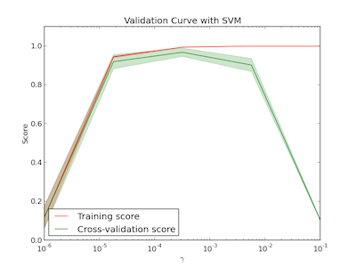
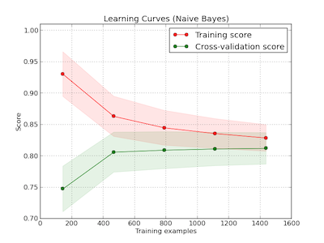
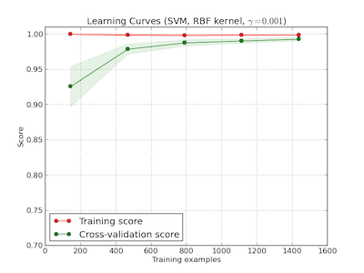

sklearn
- home http://scikit-learn.org/stable/index.html
- docs http://scikit-learn.org/stable/documentation.html
- 一张图说明如何选择正确算法
{kind=link}
Table of Contents
1 Overview
- supervised learning
- classification # Identifying to which set of categories a new observation belong to.
- regression # Predicting a continuous value for a new example.
- unsupervised learning
- clustering # Automatic grouping of similar objects into sets.
- dimensionality reduction # Reducing the number of random variables to consider.
- model selection and evaluation # Comparing, validating and choosing parameters and models.
- dataset transformations # Feature extraction and normalization.
- dataset loading utilities
2 Building Blocks
http://scipy-lectures.github.io/ sklearn底层使用的三驾马车numpy, scipy, matplotlib.
numpy. 数组/矩阵的表示和运算能力. # import numpy as np
numpy provides:
- extension package to Python for multi-dimensional arrays
- closer to hardware (efficiency)
- designed for scientific computation (convenience)
- also known as array oriented computing
array attributes
- ndim # 维度
- shape # 每个维度大小
- dtype # 存储类型
- T # 转置矩阵
- size # 元素个数
- itemsize # 每个元素占用内存大小
- nbytes # 占用内存大小
index array
- a[d1, d2, …] # 多维访问
- a[<array>, …] # fancy indexing
pylab. 绘图能力 # import pylab as plt
scipy. 复杂数值处理运算能力.
The scipy package contains various toolboxes dedicated to common issues in scientific computing. Its different submodules correspond to different applications, such as interpolation, integration, optimization, image processing, statistics, special functions, etc. scipy can be compared to other standard scientific-computing libraries, such as the GSL (GNU Scientific Library for C and C++), or Matlab’s toolboxes. scipy is the core package for scientific routines in Python; it is meant to operate efficiently on numpy arrays, so that numpy and scipy work hand in hand.
3 Supervised Learning
3.1 Support Vector Machines
http://scikit-learn.org/stable/modules/svm.html
svm可以用来做classification, regression以及outliers detection(异常检测).
在sklearn里面svm具体分为SVC/SVR和NuSVC/NuSVR. 两者的区别在 这里 可以看到，但是差别应该不大："It can be shown that the Nu-SVC formulation is a reparametrization of the C-SVC and therefore mathematically equivalent."
classification有三种分类器分别是SVC, NuSVC, LinearSVC. 其中LinearSVC相同于我SVC使用'linear'核方法，区别在于SVC底层使用libsvm, 而LinearSVC则使用liblinear. 另外LinearSVC得到的结果最后也不会返回support(支持向量). 对于多分类问题SVC使用one-vs-one来生成分类器，也就是说需要构造C(n,2)个分类器。LinearSVC使用one-vs-rest来生成分类器，也就是构造n个分类器。LinearSVC也有比较复杂的算法只构造一个分类器就可以进行多分类。regression有两种回归器分别是SVR和NuSVR. classifier和regressor都允许直接输出概率值。用于异常检测是OneClassSVM.
kernel函数支持 1.linear 2. polynomial 3. rbf 4. sigmoid(tanh). 对于unbalanced的问题，sklearn实现允许指定 1.class_weight 2.sample_weight. 其中class_weight表示每个class对应的权重，这个在构造classifier时候就需要设置。如果不确定的话就设置成为'auto'。sample_weight则表示每个实例对应的权重，这个可以在调用训练方法fit的时候传入。另外一个比较重要的参数是C(惩罚代价), 通常来说设置成为1.0就够了。但是如果数据中太多噪音的话那么最好减小一些。
在计算效率方面，SVM是通过QP来求解的。基于libsvm的实现时间复杂度在O(d * n^2) ~ O(d * n^3)之间，变化取决于如何使用cache. 所以如果我们内存足够的话那么可以调大cache_size来加快计算速度。其中d表示feature大小，如果数据集合比较稀疏的话，那么可以认为d是non-zero的feature平均数量。libsvm处理数据集合大小最好不要超过10k. 相比之下，liblinear的效率则要好得多，可以很容易训练million级别的数据集合。
#!/usr/bin/env python #coding:utf-8 #Copyright (C) dirlt from sklearn import datasets iris = datasets.load_iris() digits = datasets.load_digits() from sklearn import svm from sklearn import cross_validation from sklearn.metrics import classification_report clf = svm.SVC(gamma = 0.001, C = 1.0) # (data, target) = (iris.data, iris.target) (data, target) = (digits.data, digits.target) X_tr, X_tt, y_tr, y_tt = cross_validation.train_test_split(data, target, test_size = 0.3, random_state = 0) clf.fit(X_tr, y_tr) y_true, y_pred = y_tt, clf.predict(X_tt) print(classification_report(y_true, y_pred))
3.2 Ensemble methods
http://scikit-learn.org/stable/modules/ensemble.html
emsemble方法通常分为两类：
- averaging methods. 平均方法，使用不同的算法构建出几个不同的假设然后取平均效果。算法得到的假设都比较好但是容易overfitting, 通过取平均效果降低variance. 通常算法只是作用在部分数据上。这类方法有Bagging, Random Forest等。sklearn提供了bagging meta-estimator允许传入base-estimator来自动做averaging. RF还提供了两个不同版本，另外一个版本在生成决策树选择threshold上也做了随机。
- boosting methods. 增强方法，使用同一个算法不断地修正和迭代然后组合。算法得到的假设一般都比较弱，但是通过组合在一起得到效果比较好的假设。通常算法作用在全部数据上。这类方法有AdaBoost, Gradient Boosting等。sklearn提供的AdaBoost内部base-estimator默认是DecisionTree, 而GBDT内部base-estimator固定就是decision-tree但是允许自定义损失函数。
使用Decision Tree来做分类和回归时另外一个好处是可以知道每个feature的重要性：位于DecisionTree越高的feature越重要。不过我的理解是这种feature重要性只能用在DecisionTree这种训练方式上。
#note: 从下面程序效果上看，GBDT比RF稍微差一些，并且GBDT运行时间要明显长于RF。用iris数据集合的话两者效果差不多。
#!/usr/bin/env python #coding:utf-8 #Copyright (C) dirlt from sklearn import datasets iris = datasets.load_iris() digits = datasets.load_digits() from sklearn.ensemble import RandomForestClassifier, GradientBoostingClassifier from sklearn import cross_validation from sklearn.metrics import classification_report # (data, target) = (iris.data, iris.target) (data, target) = (digits.data, digits.target) X_tr, X_tt, y_tr, y_tt = cross_validation.train_test_split(data, target, test_size = 0.3, random_state = 0) print '----------RandomForest----------' clf = RandomForestClassifier(n_estimators = 100, bootstrap = True, oob_score = True) clf.fit(X_tr, y_tr) print 'OOB Score = %.4f' % clf.oob_score_ print 'Feature Importance = %s' % clf.feature_importances_ y_true, y_pred = y_tt, clf.predict(X_tt) print(classification_report(y_true, y_pred)) print '----------GradientBoosting----------' clf = GradientBoostingClassifier(n_estimators = 100, learning_rate = 0.6, random_state = 0) clf.fit(X_tr, y_tr) print 'Feature Importance = %s' % clf.feature_importances_ y_true, y_pred = y_tt, clf.predict(X_tt) print(classification_report(y_true, y_pred))
3.3 Nearest Neighbors
http://scikit-learn.org/stable/modules/neighbors.html
NN可以同时用来做监督和非监督学习。其中非监督学习的NN是其他一些学习方法的基础。
在实现上sklearn提供了几种算法来寻找最近点：1. brute-force 2. kd-tree 3. ball-tree 4. auto. 其中auto是根据数量大小自动选择算法的。brute-force是采用暴力搜索算法，kd-tree和ball-tree则建立了内部数据结构来加快检索。假设数据维度是d, 数据集合大小是N的话，那么三个算法时间复杂度分别是O(dN), O(d*logN), O(d*logN). 不过如果d过大的话kd-tree会退化称为O(dN).
如果数据量比较小的话那么1比2,3要好，所以在实现上kd-tree/ball-tree发现如果数据集合较小的话就会改用brute-force来做。这个阈值称为leaf_size. leaf_size大小会影响到 1. 构建索引时间(反比) 2. 查询时间(合适的leaf_size可以达到最优) 3. 内存大小(反比). 所以尽可能地增大leaf_size但是确保不会影响查询时间。
classifier和regressor基本上就是在这些数据结构上做了一层包装。我们可以指定距离函数以及查找到最近点之后的合成函数. 默认距离函数是minkowski(p=2, 也就欧几里得距离), 合成函数包含uniform和distance(和距离成反比). KNeighborsClassifier是选择附近k个点，而RadiusNeighborsClassifier则是选择附近在radius范围内的所有点。另外还有一个NearestCentroid分类器：假设y有k个classes的话，根据这些class归纳为k类并且计算出中心(centroid), 然后判断离哪个中心近就预测哪个class.
#!/usr/bin/env python #coding:utf-8 #Copyright (C) dirlt from sklearn import datasets iris = datasets.load_iris() digits = datasets.load_digits() from sklearn.neighbors import KNeighborsClassifier from sklearn import cross_validation from sklearn.metrics import classification_report # (data, target) = (iris.data, iris.target) (data, target) = (digits.data, digits.target) X_tr, X_tt, y_tr, y_tt = cross_validation.train_test_split(data, target, test_size = 0.3, random_state = 0) clf = KNeighborsClassifier(n_neighbors = 10) clf.fit(X_tr, y_tr) y_true, y_pred = y_tt, clf.predict(X_tt) print(classification_report(y_true, y_pred))
3.4 Naive Bayes
http://scikit-learn.org/stable/modules/naive_bayes.html
朴素贝叶斯用于分类问题，其中两项主要工作就是计算 1.P(X|y) 2.P(y). 两者都是通过MLE(maximum likehood estimation)来完成的。P(y)相对来说比较好计算，计算P(X|y)有下面三种办法：
- 如果Xi是连续量的话，Gaussian Naive Bayes. 取y=k的所有Xi数据点，假设这个分布服从高斯分布。计算出这个高斯分布的mean和std之后，就可以计算P(X|y=k)。这个模型系数有d * k个。
- 如果Xi是离散量的话，Multinomial Naive Bayes. 那么P(X=u|y=k) = P(X=u, y=k) / P(y=k). 这个模型系数有k * ∑ {Xi}个。模型里面还有一个平滑参数。
- 进一步如果Xi是(0,1)的话，Bernoulli Naive Bayes. 通常我们需要提供参数binarize，这个方法用来将X转换成为(0,1).
#!/usr/bin/env python #coding:utf-8 #Copyright (C) dirlt from sklearn import datasets iris = datasets.load_iris() digits = datasets.load_digits() from sklearn.naive_bayes import MultinomialNB, GaussianNB from sklearn import cross_validation from sklearn.metrics import classification_report (data, target) = (iris.data, iris.target) clf = GaussianNB() # (data, target) = (digits.data, digits.target) # clf = MultinomialNB() X_tr, X_tt, y_tr, y_tt = cross_validation.train_test_split(data, target, test_size = 0.3, random_state = 0) clf.fit(X_tr, y_tr) y_true, y_pred = y_tt, clf.predict(X_tt) print(classification_report(y_true, y_pred))
4 Model selection and evaluation
4.1 Cross-validation: evaluating estimator performance
http://scikit-learn.org/stable/modules/cross_validation.html
- 使用train_test_split分开training_set和test_set.
- 使用k-fold等方式从training_set中分出validation_set做cross_validation.
- 使用cross_val_score来进行cross_validation并且计算cross_validation效果.
#!/usr/bin/env python
#coding:utf-8
#Copyright (C) dirlt
import numpy as np
from sklearn import cross_validation
from sklearn import datasets
from sklearn import svm
# iris.data.shape = (150, 4); n_samples = 150, n_features = 4
iris = datasets.load_iris()
# 分出40%作为测试数据集合. random_state作为随机种子
X_train, X_test, y_train, y_test = cross_validation.train_test_split(iris.data, iris.target, test_size = 0.4, random_state = 0)
# 假设这里我们已经完成参数空间搜索
clf = svm.SVC(gamma = 0.001, C = 100., kernel = 'linear')
# 使用cross_validation查看参数效果
scores = cross_validation.cross_val_score(clf, X_train, y_train, cv = 3)
print("Accuracy on cv: %0.2f (+/- %0.2f)" % (scores.mean(), scores.std() * 2))
# 如果效果不错的话，就是可以使用这个模型计算测试数据
clf.fit(X_train, y_train)
print(np.mean(clf.predict(X_test) == y_test))
4.2 Grid Search: searching for estimator parameters
http://scikit-learn.org/stable/modules/grid_search.html
参数空间搜索方式大致分为三类： 1.暴力 2.随机 3.adhoc. 其中23和特定算法相关。
我们这里以暴力搜索为例。我们只需要以字典方式提供搜索参数的可选列表即可。因为搜索代码内部会使用cross_validation来做验证，所以我们只需提供cross_validatio参数即可。下面代码摘自这个 例子 。
#!/usr/bin/env python
#coding:utf-8
#Copyright (C) dirlt
from __future__ import print_function
from sklearn import datasets
from sklearn.cross_validation import train_test_split
from sklearn.grid_search import GridSearchCV
from sklearn.metrics import classification_report
from sklearn.svm import SVC
# Loading the Digits dataset
digits = datasets.load_digits()
# To apply an classifier on this data, we need to flatten the image, to
# turn the data in a (samples, feature) matrix:
(n_samples, h, w) = digits.images.shape
# 这里也可以直接用digits.data和digits.target. digits.data已经是reshape之后结果.
X = digits.images.reshape((n_samples, -1))
y = digits.target
# Split the dataset in two equal parts
X_train, X_test, y_train, y_test = train_test_split(X, y, test_size=0.4, random_state=0)
# Set the parameters by cross-validation
# 提供参数的可选列表
tuned_parameters = [{'kernel': ['rbf'], 'gamma': [1e-3, 1e-4],
'C': [1, 10, 100, 1000]},
{'kernel': ['linear'], 'C': [1, 10, 100, 1000]}]
# 链接中给的代码还对cross_validation效果评价方式(scoring)进行了搜索
clf = GridSearchCV(SVC(), tuned_parameters, cv=5) # 使用k-fold划分出validation_set. k = 5
clf.fit(X_train, y_train)
print("Best parameters set found on development set:")
print(clf.best_estimator_)
print("Grid scores on development set:")
for params, mean_score, scores in clf.grid_scores_:
print("%0.3f (+/-%0.03f) for %r"
% (mean_score, scores.std() / 2, params))
print("Detailed classification report:")
print("The model is trained on the full development set.")
print("The scores are computed on the full evaluation set.")
y_true, y_pred = y_test, clf.predict(X_test)
print(classification_report(y_true, y_pred))
代码最后使用最优模型作用在测试数据上，然后使用classification_report打印评分结果.
Best parameters set found on development set:
SVC(C=10, cache_size=200, class_weight=None, coef0=0.0, degree=3, gamma=0.001,
kernel=rbf, max_iter=-1, probability=False, random_state=None,
shrinking=True, tol=0.001, verbose=False)
Grid scores on development set:
0.986 (+/-0.001) for {'kernel': 'rbf', 'C': 1, 'gamma': 0.001}
0.963 (+/-0.004) for {'kernel': 'rbf', 'C': 1, 'gamma': 0.0001}
0.989 (+/-0.003) for {'kernel': 'rbf', 'C': 10, 'gamma': 0.001}
0.985 (+/-0.003) for {'kernel': 'rbf', 'C': 10, 'gamma': 0.0001}
0.989 (+/-0.003) for {'kernel': 'rbf', 'C': 100, 'gamma': 0.001}
0.983 (+/-0.003) for {'kernel': 'rbf', 'C': 100, 'gamma': 0.0001}
0.989 (+/-0.003) for {'kernel': 'rbf', 'C': 1000, 'gamma': 0.001}
0.983 (+/-0.003) for {'kernel': 'rbf', 'C': 1000, 'gamma': 0.0001}
0.976 (+/-0.005) for {'kernel': 'linear', 'C': 1}
0.976 (+/-0.005) for {'kernel': 'linear', 'C': 10}
0.976 (+/-0.005) for {'kernel': 'linear', 'C': 100}
0.976 (+/-0.005) for {'kernel': 'linear', 'C': 1000}
Detailed classification report:
The model is trained on the full development set.
The scores are computed on the full evaluation set.
precision recall f1-score support
0 1.00 1.00 1.00 60
1 0.95 1.00 0.97 73
2 1.00 0.97 0.99 71
3 1.00 1.00 1.00 70
4 1.00 1.00 1.00 63
5 0.99 0.97 0.98 89
6 0.99 1.00 0.99 76
7 0.98 1.00 0.99 65
8 1.00 0.96 0.98 78
9 0.97 0.99 0.98 74
avg / total 0.99 0.99 0.99 719
4.3 Pipeline: chaining estimators
http://scikit-learn.org/stable/modules/pipeline.html
将多个阶段串联起来自动化
4.4 Model evaluation: quantifying the quality of predictions
http://scikit-learn.org/stable/modules/model_evaluation.html
There are 3 different approaches to evaluate the quality of predictions of a model: # 有3中不同方式来评价模型预测结果
- Estimator score method: Estimators have a score method providing a default evaluation criterion for the problem they are designed to solve. # 模型自身内部的评价比如损失函数等
- Scoring parameter: Model-evaluation tools using cross-validation (such as cross_validation.cross_val_score and grid_search.GridSearchCV) rely on an internal scoring strategy. # cv的评价，通常是数值表示. 比如'f1'.
- Metric functions: The metrics module implements functions assessing prediction errors for specific purposes. # 作用在测试数据的评价，可以是数值表示，也可以是文本图像等表示. 比如'classification_report'.
其中23是比较相关的。差别在于3作用在测试数据上是我们需要进一步分析的，所以相对来说评价方式会更多一些。而2还是在模型选择阶段所以我们更加倾向于单一数值表示。
sklearn还提供了DummyEstimator. 它只有有限的几种比较dummy的策略，主要是用来给出baseline.
DummyClassifier implements three such simple strategies for classification:
- 'stratified' generates randomly predictions by respecting the training set’s class distribution,
- 'most_frequent' always predicts the most frequent label in the training set,
- 'uniform' generates predictions uniformly at random.
- 'constant' always predicts a constant label that is provided by the user.
DummyRegressor also implements three simple rules of thumb for regression:
- 'mean' always predicts the mean of the training targets.
- 'median' always predicts the median of the training targests.
- 'constant' always predicts a constant value that is provided by the user.
4.5 Model persistence
http://scikit-learn.org/stable/modules/model_persistence.html
可以使用python自带的pickle模块，或者是sklearn的joblib模块。joblib相对pickle能更有效地序列化到磁盘上，但缺点是不能够像pickle一样序列化到string上。
4.6 Validation curves: plotting scores to evaluate models
http://scikit-learn.org/stable/modules/learning_curve.html
Every estimator has its advantages and drawbacks. Its generalization error can be decomposed in terms of bias, variance and noise. The bias of an estimator is its average error for different training sets. The variance of an estimator indicates how sensitive it is to varying training sets. Noise is a property of the data. # bias是指模型对不同训练数据的偏差，variance则是指模型对不同训练数据的敏感程度，噪音则是数据自身属性。这三个问题造成预测偏差。
#note: 这个特性应该是从0.15才有的。之前我用apt-get安装的sklearn-0.14.1没有learning_curve这个模块。
validation curve
观察模型某个参数变化对于training_set和validation_set结果影响，来确定是否underfitting或者overfitting. 参考这个 例子 绘图
If the training score and the validation score are both low, the estimator will be underfitting. If the training score is high and the validation score is low, the estimator is overfitting and otherwise it is working very well. A low training score and a high validation score is usually not possible. All three cases can be found in the plot below where we vary the parameter gamma on the digits dataset.
可以看到gamma在5 * 10-4附近cross-validation score开始下滑，但是training score还是不错的，说明overfitting.

learning curve
观察增加数据量是否能够改善效果。通常增加数据量会使得traning score和validation score不断收敛。如果两者收敛处score比较低的话(high-bias), 那么增加数据量是不能够改善效果的话，那么我们就需要更换模型。相反如果两者收敛位置score比较高的话，那么增加数据量就可以改善效果。参考这个 例子 绘图
第一幅图是是用朴素贝叶斯的learning curve. 可以看到high-bias情况。第二幅图是使用SVM(RBF kernel)的learning curve. 学习情况明显比朴素贝叶斯要好。
 